EDA is an approach to make sense of the data and its characteristics. It is a process that we go through to make the data ready for Machine Learning model. For more in depth explanation please refer to Wikipedia.
In this part of porfolio, we'll be using the data from here. There is no data dictionary that I can find. I think this is a marketing analysis data about customers' eligibility for a loan or response to a survey. We are not concern about that at the moment. The reason I am using this data is because it is really a messy data and for that reason, it is a "good" data for me to showcase my EDA skills. Without further adue, let us begin loading the data.
For this project, I'll be using Google Colab to perform analysis. Let's load the data into Colab and do some basic review to see the state of the data. I'll be using Python programming language throughout this task.
First step is to load the necessary dependencies so that we can use them to analyze the data.
Reading in the CSV data file and read the first 5 rows and the last 5 rows of data just to get a sense of the data.
 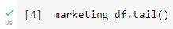
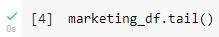
Table 1 Top 5 rows of the data
A quick view showing some problems with first 2 rows of the data highlighted in red retangular. Fortunately, I found the header that I can use. It's located to the right of index 1 which is highlighted in green rectangular.
Prior to doing any clean up, There are several things we need to check. Let's see how many columns and rows do we have in this database.
Table 2 rows and columns count
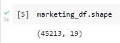So we have total of 45 thousand rows and 19 columns. First thing we need to check for is the missing values.
Table 3 missing values
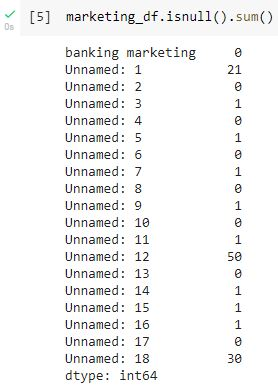We have some missing values in column Unnamed 1, 3, 5, 7, 11, 12, 14, 15, 16, 17, and 18. Out of 45 thousand rows, that's not a horrible loss. It could be an issue if the element that we're looking for is a rare occurance. That will be another story for another day. We are not concern with that right now. While listing the top 5 rows in Table 1, I also notice that Unnamed 5 column is a little bit unusual.
Table 4 jobedu column
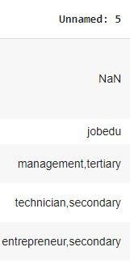This column is named "jobedu". Looking at the data, it seems like the column can be separated into 2 individual columns. First column should be "job" and the second one should be "edu". Next thing I notice is the customerID field, essentially we have 2 id fields and we only need one.
Table 5 duplicate customerID fields
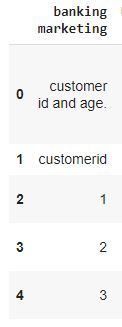We are going to do some cleaning first and then move on with other data exploratory analysis. So, quick recap, here are things that we want to do:
1. Remove top 2 rows and the header.
2. Remove customerID fields. The customerID field are probably sequential numbers which have no meaning.
3. Separate jobedu into job and edu.
4. Drop the jobedu column because it is now a duplicate column of job and edu column.
Table 6 Python code to reconstruct header
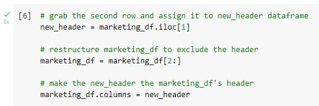 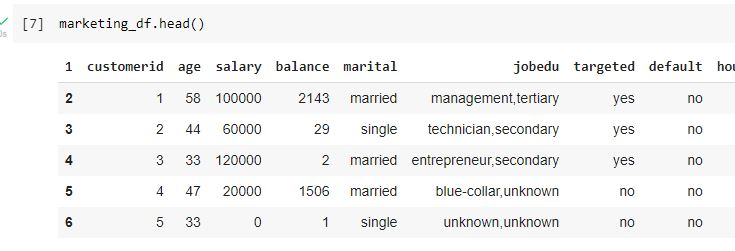The result looks somewhat satisfactory, HOWEVER, we're not there yet.
Table 7 drop columnid
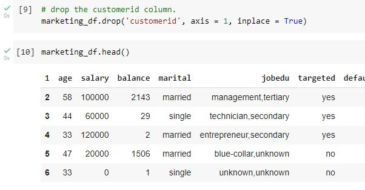Splitting jobedu into job and education columns. After that we'll drop the jobedu column, I'll drop it just like I drop the customerid column.
Table 8 splitting jobedu column
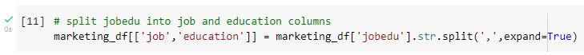 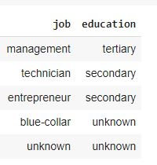I hope you're not falling asleep yet at this point. Data cleaning is a boring process. I would say probably 90% of the time data scietists spent on will be data cleaning and making the data useful for Machine Learning. Please bare with me. We are nowhere near done yet. Next section we will be handling missing data. Since I have removed first 2 rows and restructured the header, let us check on the missing value again.
Table 9 missing values after correcting header issues
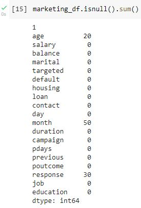So, we have "age", "month", and "response" with missing values. If possible we would like to preserve as much data as possible for accurate prediction. Another reason for data preservation is that some data collection can be very costly or cannot be repeated. If we just drop them, it will be a waste of company resources to collect them in the first place.
There are several ways to deal with missing values, however there isn't any solution that we can call "one size fits all" solution. It depends on the type of data you are trying to impute. So, here they are:
1. Replacing NaN with a single constant value.
2. Replacing Nan with a value from previous or next row.
3. Replacing Nan with a statistical value such as mean, mode, median....etc.
4. Or, we can just drop them if they're no great impact to the overall outcome.
Which method should we use? First option, we don't know which value to use, we certainly can't use age 0. Second option, unless this is a time series or sequential data, we shouldn't consider second option. Third option seems like a good option for us. We can certainly use option 4 but we are trying not to sacrifice any data if we can help it. Keep in mind that the best data is the original data, what we are doing here is just to mitigate a bad situation that comes with the data. We are going to change the entire column's data type to numeric type. NaN can be changed to numeric but it is meaningless if we're trying to use NaN to calculate something. After that we're going to impute mean value to all NaN values. Here's how it's done:
Table 10 making NaN a numerical value and then impute it with mean value
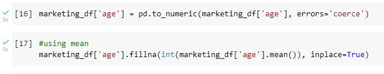Check the missing values again and age column is free of missing values and is of data type int64.
Table 11 age column is free of NaN value
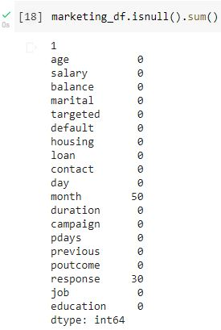We have 50 missing values in the "month" column. Referring back to the 4 choices we have, I think it is best if we impute these data with a statistical values. Which statistical value would make sense? Since month value is not calculable, it makes no sense to add 2 months together and/or divide them by 2. We can use mode in this case. What's the most popular value in the "month" column? We will get that value and impute it to the missing values cells.
Table 12 mode occurance count and mode of column month
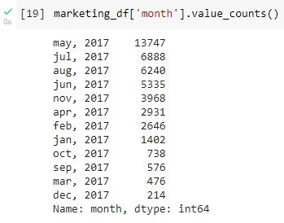 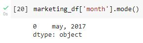It's clear that "may, 2017" is the mode. This is how we impute the missing values with mode.
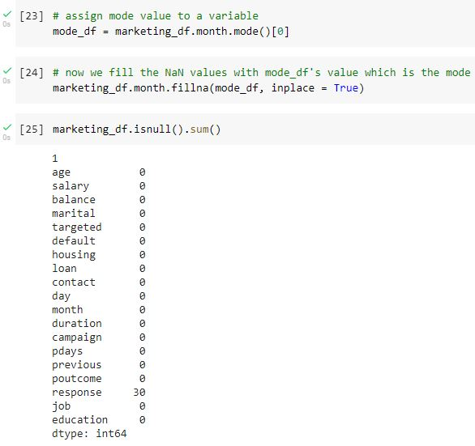Notice that I use mode()[0] instead of just regular mode(), this is because there could be multiple modes in the feature and and I want Pandas to use the first one, which is the one with the highest frequency.
The last feature with missing values is "response". Looking at the overall data, this feature and the feature "loan" could potentially be an output feature. It is best that we do not make any changes to the outcome data because imputing such rows could bring inaccuracy or bias into our prediction. We are going to drop the data. Notice that I did not pick the particular column and drop the NaN values in that column. At this point the entire datafram has only 30 NaN values in the "response" column. Dropping NaN on the whole dataframe means dropping 30 NaN in the "response" column.
Table 13 drop the remaining cells with missing values
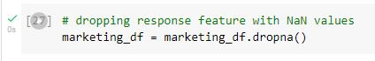Next logical step is to look for outliers. Outliers can be detected using visualization tools such as matplotlib and seaborn. Common plots are scatter plot and box plot. Another way to detect outliers is to calculate the dataframe's Z score and look for values that are too far off center. I want to bring up an important point here, an outlier may not be an outlier if it's relevant to our data, it really depends on how you perceive it. For example, if we were to do a scatterplot for a company's employee incomes, we will notice that there are a few points that are too far away from the group. Those are CEO, executives, and some high income individuals. Are they outliers? If you are looking for average employee income then yes they are outliers. If you just want to see income distribution, no, they are not outliers. Get with the domain knowledge expert to determine the fate of the so call outliers. Don't just eliminate them without giving some thoughts.
Table 14 pairplot to look for outliers
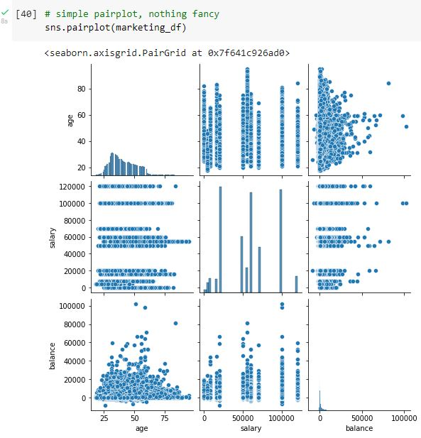Zoom in on balance vs age, scores in red circles could be outliers. Is it possible for a person of age 55 and 60 to have 100k in their bank account? Absolutely. What about age 85 to have 80k in their bank account? Of course. From the plot, I can gather that people starting out their carriers around the age of 20s, they don't have much saving. They have a little more saving when they're between 40 and 60. After retirement, they are living on their social security and saving, so their balance become less and less. I am not going to remove those "outliers" at this point. We don't know what kind of outcome the company is looking for at this point. Working on data without a direction or targeted outcome is like shooting in the dark.
Table 15 age vs balance
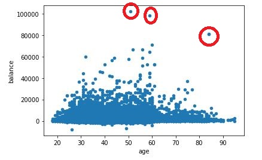Another aspect of EDA is to look at distribution of data. We are going to look at types of job and their distribution, age of people participate in this survey, salary distribution, and education.
Table 16 distribution of age, salary, education, and job types
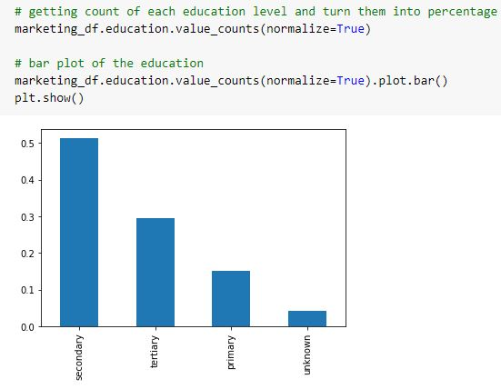 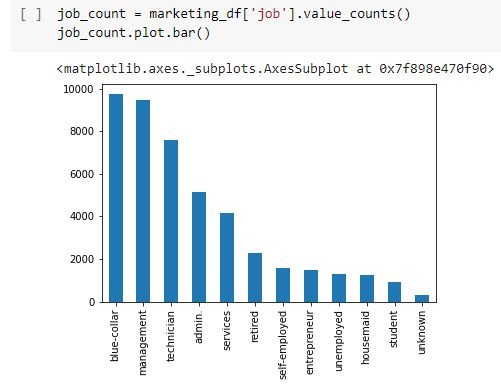 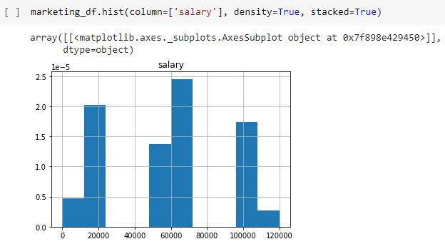 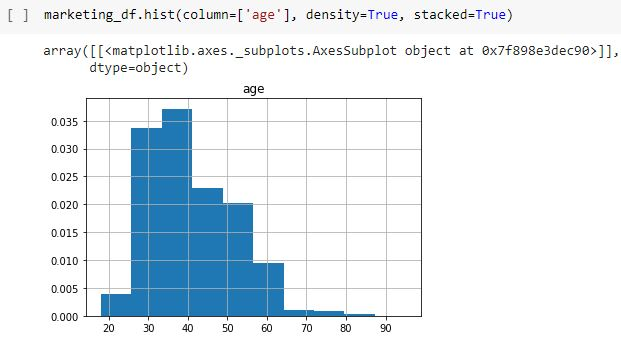By the graphs above, we can infer that most people who participated in the survey are are blue colar and management, most common education is secondary education, most of them are between age of 30 and 40, and we can group their salary into 3 distinct groups, low, middle, and high income group.
Table 17 marital status vs response rate
Table 18 marital status vs loan rate
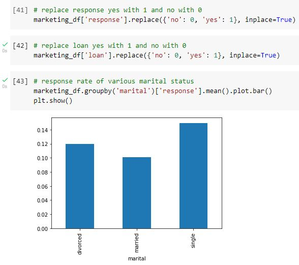 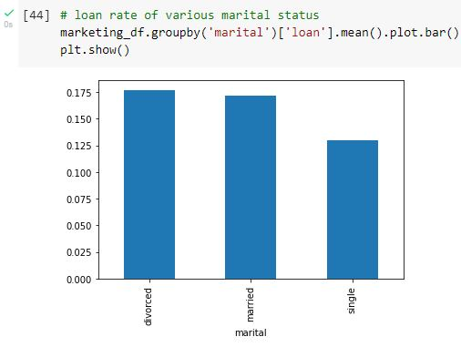We move on to multivariate analysis next. The word multivariate suggested that there will be multiple variables involve in the analysis. We will be looking at correlation between each features and then plot heatmap using the correlation.
Table 19 correlation between each feature
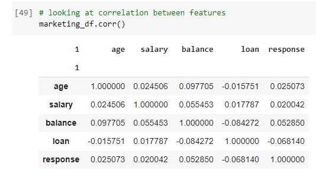We only have a few features here so it is not difficult to find any features that are highly correlated with each other either positively or negatively. There is also another type of relationship between each element, which is no relationship at all. 1 or -1 is the highest correlation 2 elements can have. 0 means not correlated at all. Looking at the graph above, the diagonal elements are the correlation of a feature with itself, therefore they are highly correlated. We can just ignore the diagonal result. Nothing stands out in the correlation table. In statistics, if we were to find 2 elements that are highly correlated with each other, we can remove one of them. There is no need to have 2 almost similar features exist in one formula. When we have a lot of features in a table, it will be very difficult to spot the correlation at a glance. This is when Seaborn's heatmap comes in play.
Table 20 heatmap for correlation
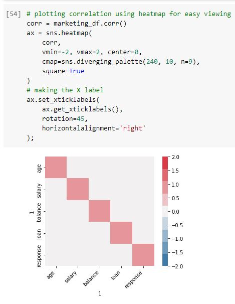Human are creature of graphic, it is much easier to spot the correlation using heatmap in table 20. Nothing really strongly correlated with each other excep the diagonal elements.
Exploratory Data Analysis refers to the critical process of performing initial investigation on data to discover any hidden features and anomalies such as outlier and skewness of a distribution just to name a few. Companies can benefit from a better EDA. It means cost saving, efficient data collection, reduced data correction, and better accuracy when apply to a Machine Learning model.
created with
Website Builder Software .